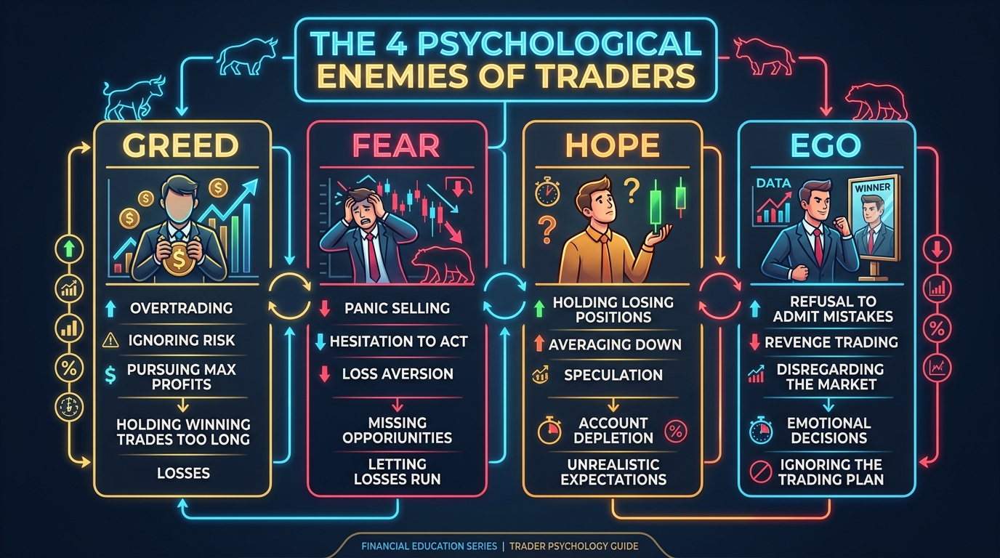

"Không có gì mới trên Phố Wall. Mọi điều xảy ra ngày hôm nay đều đã từng xảy ra trong quá khứ và sẽ tiếp tục lặp lại trong tương lai, bởi vì bản chất con người là không bao giờ thay đổi."
— Jesse Lauriston Livermore (1877 – 1940)
Trong biên niên sử tài chính thế giới, không một cái tên nào gợi lên sự kinh ngạc, kính phục lẫn niềm tiếc thương sâu sắc như Jesse Lauriston Livermore. Được mệnh danh là "Con Gấu Vĩ Đại Của Phố Wall" (The Great Bear of Wall Street), ông là biểu tượng tối thượng của nghệ thuật đầu cơ: từ một cậu bé làm thuê vô danh trở thành người chi phối cả thị trường tài chính Mỹ, nắm giữ khối tài sản hàng trăm triệu USD, rồi rơi vào những lần phá sản tán gia bại sản và kết thúc bằng một phát súng bi kịch.
I. CUỘC ĐỜI HUYỀN THOẠI & NHỮNG THĂNG TRẦM LỊCH SỬ
1. Cậu bé nông dân & Biệt danh "Boy Plunger" (1877 – 1899)
Jesse sinh năm 1877 trong một gia đình nông dân nghèo ở Shrewsbury, Massachusetts. Năm 14 tuổi, không chấp nhận cuộc đời làm nông nghèo khó, ông trốn nhà đến Boston với 5 USD mẹ cho. Ông xin làm chân ghi bảng giá (Board Boy) tại hãng môi giới Paine Webber với đồng lương 5 USD/tuần.
Hàng ngày ghi chép hàng ngàn mức giá từ máy điện báo (Ticker Tape) lên bảng đen, Livermore nhận ra quy luật kỳ diệu: Biến động giá không hề ngẫu nhiên, chúng luôn bộc lộ các mô thức hành vi lặp đi lặp lại trước khi bùng nổ thành một con sóng lớn. Ông bắt đầu đặt cược tại các "Bucket Shop" (sòng cược chui) và thắng liên tục. Đến năm 20 tuổi, ông kiếm được hơn 10.000 USD và bị tất cả các sòng cược cấm cửa vì thắng quá nhiều, gắn liền với biệt danh "The Boy Plunger".
2. Những trận đánh kinh điển ghi danh vào lịch sử tài chính
- Trận động đất San Francisco (1906): Nhận thấy cổ phiếu đường sắt Union Pacific có dấu hiệu suy yếu dù truyền thông rất tích cực, Livermore quyết định bán khống quy mô lớn. Trận động đất lịch sử xảy ra làm sụp đổ hệ thống đường sắt, mang về cho ông 250.000 USD.
- Đại hoảng loạn năm 1907 (Panic of 1907): Khi thanh khoản hệ thống ngân hàng cạn kiệt, Livermore mở vị thế bán khống toàn diện. Ngày 24/10/1907, toàn bộ Phố Wall sụp đổ, ông thu về 1 triệu USD chỉ trong một ngày. Nhà tài phiệt quyền lực nhất nước Mỹ J.P. Morgan đã phải đích thân cử người tới cầu xin Livermore ngừng bán khống để cứu thị trường tài chính quốc gia.
- Cú sập bẫy Bông vải (1908): Livermore mắc phải sai lầm nghiêm trọng nhất đời mình khi từ bỏ nguyên tắc độc lập để nghe theo lời khuyên của "Vua Bông" Percy Thomas. Ông liên tục mua bình quân giá xuống khi giá bông lao dốc, dẫn đến mất sạch tài sản và gánh khoản nợ gần 1 triệu USD.
- Tái sinh và trả nợ 100% (1915 – 1928): Trong Thế chiến I và thập niên 1920, Livermore trở lại kiên nhẫn nắm bắt các siêu chu kỳ và kiếm lại hàng triệu USD. Ông đã chủ động thanh toán 100% nợ gốc lẫn lãi cho toàn bộ chủ nợ cũ, dù tòa án đã tuyên bố ông phá sản và xóa nợ hợp pháp.
- Đỉnh cao vĩ đại 1929 (Thứ Ba Đen Tối - Black Tuesday): Nhận thấy thị trường tăng giá phi lý dựa trên đòn bẩy tín dụng, Livermore âm thầm tích lũy vị thế bán khống khổng lồ qua hơn 100 nhà môi giới. Khi Phố Wall sụp đổ ngày 29/10/1929, Livermore bỏ túi hơn 100 triệu USD tiền mặt (tương đương hơn 3 - 4 tỷ USD ngày nay), trở thành một trong những người giàu nhất hành tinh.
3. Bi kịch hôn nhân, trầm cảm và Phát súng định mệnh (1930 – 1940)
Sau năm 1929, cuộc sống cá nhân của Livermore rơi vào bi kịch: Người vợ Dorothy nghiện rượu, ngoại tình và dùng súng bắn trọng thương con trai của ông. Cùng lúc đó, sự ra đời của Ủy ban Chứng khoán Mỹ (SEC) thắt chặt các quy định bán khống.
Căn bệnh trầm cảm lâm sàng khiến ông mất đi sự sắc bén và tính kỷ luật thép. Chiều ngày 27/11/1940, tại phòng thay đồ khách sạn Sherry-Netherland ở New York, Jesse Livermore đã dùng súng lục tự sát ở tuổi 63, để lại bức thư tuyệt mệnh đẫm nước mắt cho người vợ thứ ba Harriet: "Nina thân yêu, anh không thể chịu đựng thêm được nữa... Anh là kẻ thất bại. Đây là lối thoát duy nhất..."
II. HỆ THỐNG PHƯƠNG PHÁP GIAO DỊCH CỦA JESSE LIVERMORE
Hệ thống của Jesse Livermore là khởi nguồn của trường phái Price Action (Hành động giá) và Order Flow (Dòng tiền) hiện đại, bao gồm 5 trụ cột cốt lõi:
5 Trụ Cột Giao Dịch Của Jesse Livermore
- 1. Đọc Băng Giá & Đường Đi Ít Kháng Cự Nhất (Line of Least Resistance): Giá luôn vận động theo hướng có ít lực cản nhất giữa Cung và Cầu. Đừng dự đoán; hãy theo dõi phản ứng của giá và khối lượng tại các vùng giá chủ chốt.
- 2. Lý Thuyết Điểm Then Chốt (Pivotal Points): Chỉ vào lệnh tại các điểm bứt phá tiếp diễn xu hướng (Continuation Pivotal Point) hoặc điểm đảo chiều xu hướng lớn (Reversal Pivotal Point). Vào lệnh tại đây giúp trader biết ngay mình đúng hay sai chỉ sau 1-2 phiên.
- 3. Thăm Dò & Nhồi Lệnh Kim Tự Tháp (Probing & Pyramiding): Giải ngân từng phần (20% - 20% - 20% - 40%). CHỈ GIA TĂNG VỊ THẾ KHI LỆNH TRƯỚC ĐANG CÓ LÃI. Tuyệt đối không bao giờ mua thêm khi đang lỗ.
- 4. Tập Trung Vào Cổ Phiếu Dẫn Đầu (Market Leaders): Chỉ giao dịch cổ phiếu mạnh nhất thuộc nhóm ngành dẫn dắt sóng thị trường. Khi cổ phiếu đầu ngành suy yếu, toàn bộ thị trường sẽ sớm tạo đỉnh.
- 5. Yếu Tố Thời Điểm & Nghệ Thuật "Ngồi Yên" (Sitting Tight): "Tiền lớn không được tạo ra từ việc mua bán liên tục, mà được tạo ra từ việc kiên nhẫn ngồi yên nắm giữ khi xu hướng đang chạy."
III. HỆ THỐNG QUẢN TRỊ VỐN & QUẢN TRỊ RỦI RO
| Quy Tắc Quản Trị Vốn | Nội Dung Thực Thi Của Livermore | Mục Đích Bảo Toàn Vốn |
|---|---|---|
| 1. Cắt Lỗ Tuyệt Đối ≤ 10% | Không bao giờ để mức lỗ trên 1 giao dịch vượt quá 10% vốn (thường cắt ở 5-8%). | Bảo toàn vốn; tránh tình trạng mất 50% tài sản khiến trader phải kiếm lại 100% chỉ để hòa vốn. |
| 2. Cấm Bình Quân Giá Xuống | Tuyệt đối không mua thêm khi vị thế đang thua lỗ (Averaging Down). | Tránh ném thêm tiền tốt vào một thương vụ xấu; không cố chứng minh mình đúng khi thị trường bảo sai. |
| 3. Rút 50% Lợi Nhuận | Sau mỗi chiến dịch thắng lớn, rút ngay 50% tiền lãi gửi ngân hàng hoặc cất két sắt. | Hiện thực hóa tiền thật (Real Money), không để lợi nhuận bốc hơi trên bảng điện tử. |
| 4. Tiền Mặt Là Vũ Khí | Luôn duy trì tỷ lệ tiền mặt dự trữ, kiên nhẫn đứng ngoài khi thị trường không rõ sóng. | Bảo vệ tâm lý ổn định và luôn có sẵn hỏa lực để thâu tóm tài sản giá rẻ khi thị trường hoảng loạn. |
| 5. Từ Chối Margin Call | Đóng toàn bộ vị thế ngay khi nhận thông báo yêu cầu nộp thêm tiền ký quỹ. | Loại bỏ tâm lý gồng lỗ, bảo vệ tài khoản khỏi nguy cơ bị xóa sổ hoàn toàn. |
IV. CÁC BÀI HỌC TÂM LÝ ĐỂ ĐỜI CHO MỌI THẾ HỆ TRADER
1. Bốn Cạm Bẫy Tâm Lý Lớn Nhất
- Tham lam (Greed): Dùng đòn bẩy quá đà, không chịu chốt lời và muốn làm giàu sau một đêm.
- Sợ hãi (Fear): Cắt non các lệnh đang sinh lời lớn nhưng lại chần chừ, sợ hãi không dám cắt lỗ dứt khoát.
- Hy vọng (Hope): Căn bệnh nguy hiểm nhất — khi cổ phiếu lao dốc, trader "hy vọng" nó sẽ hồi phục để hòa vốn, biến một lệnh lướt sóng ngắn hạn thành một "khoản đầu tư dài hạn bất đắc dĩ".
- Cái tôi / Sĩ diện (Ego): Cố chấp bảo vệ quan điểm cá nhân. Cần nhớ: Thị trường luôn luôn đúng, chỉ có nhà đầu tư là sai lầm.

2. Đừng Bao Giờ Tranh Luận Với Bảng Điện
Bảng điện tử chỉ phản ánh sự thật khách quan của quy luật cung cầu. Nó không có cảm xúc, không nghe lời giải thích và không quan tâm bạn nghĩ gì. Khi giá đi ngược nhận định, hãy nhận sai và thoát ra ngay lập tức.
3. Cảnh Giác Tuyệt Đối Với Tin Đồn & Lời Khuyên Nội Bộ (Tips & Rumors)
Mọi lời khuyên từ bạn bè, người thân, chuyên gia hay tin tức mật đều là cạm bẫy phá hủy tài khoản. Bài học đắt giá nhất của Livermore từ vụ sập bẫy thị trường bông năm 1908: Khi ông từ bỏ nhận định độc lập để tin lời "chuyên gia" Percy Thomas, ông đã mất toàn bộ cơ nghiệp.
4. Bài Học Cuối Cùng: Sự Cô Độc Của Nghề Giao Dịch & Cân Bằng Cuộc Sống
Jesse Livermore là thiên tài tối thượng về phân tích kỹ thuật và đọc dòng tiền, nhưng ông đã thất bại trong việc tìm kiếm sự bình yên nội tâm. Thành công tài chính chỉ thực sự trọn vẹn khi đi kèm với sức khỏe tinh thần, kỷ luật tự giác và sự cân bằng trong cuộc sống.
Thảo Luận Triết Lý Jesse Livermore (2)